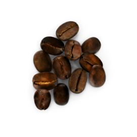
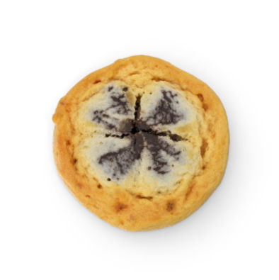
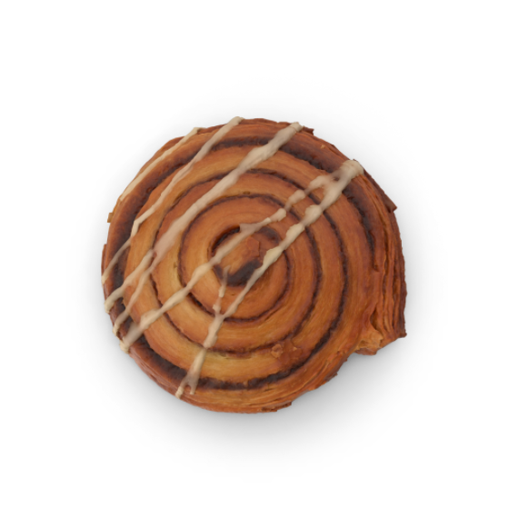
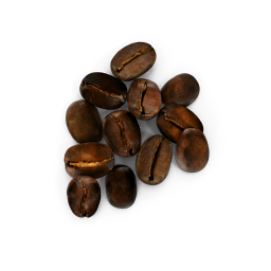
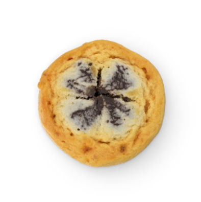
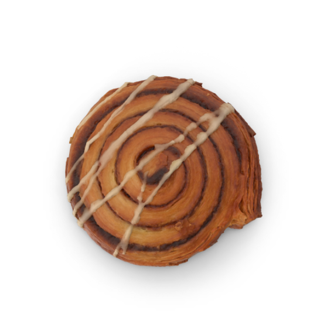

Добро пожаловать в «Зернышко»
Ароматный кофе и уютная атмосфера каждый день
Мы готовим кофе с душой и верим, что каждая чашка — это маленькое наслаждение, созданное для вас.
Мы предлагаем свежие зерна, уникальные авторские рецепты и заботу о природе. Наши бариста рады подарить вам вкус и уют, из-за которых захочется возвращаться снова и снова.
 




